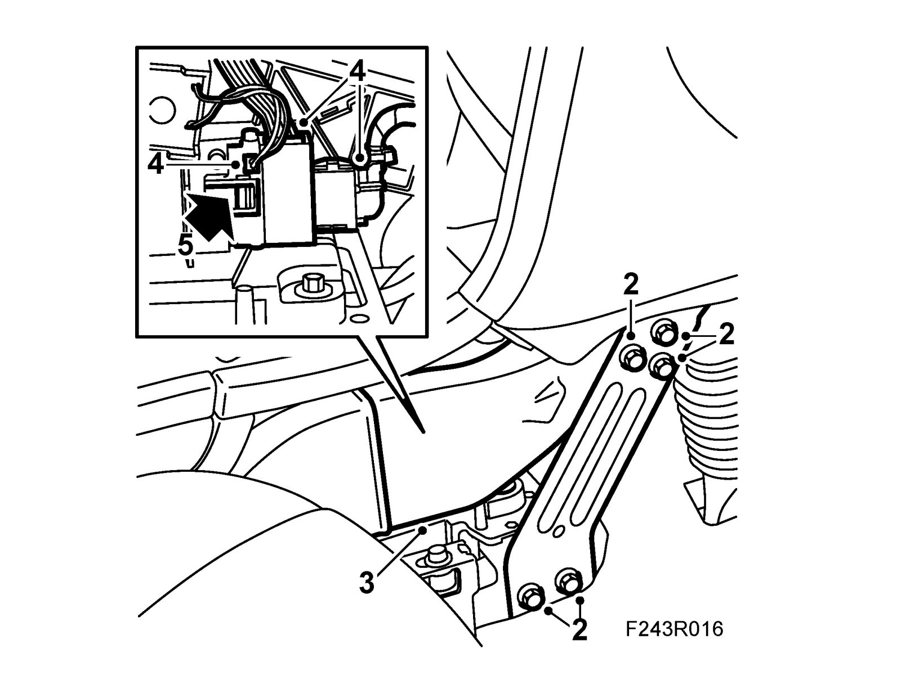
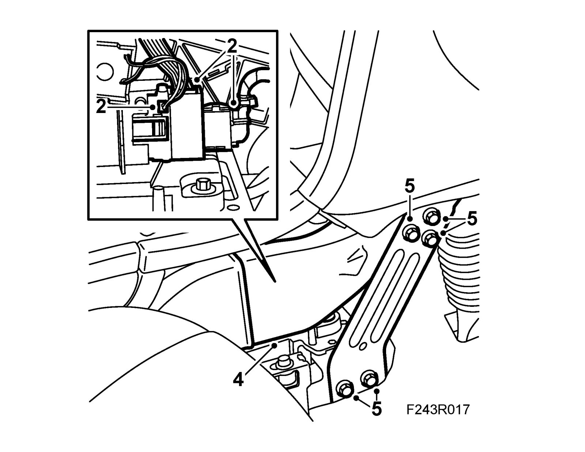
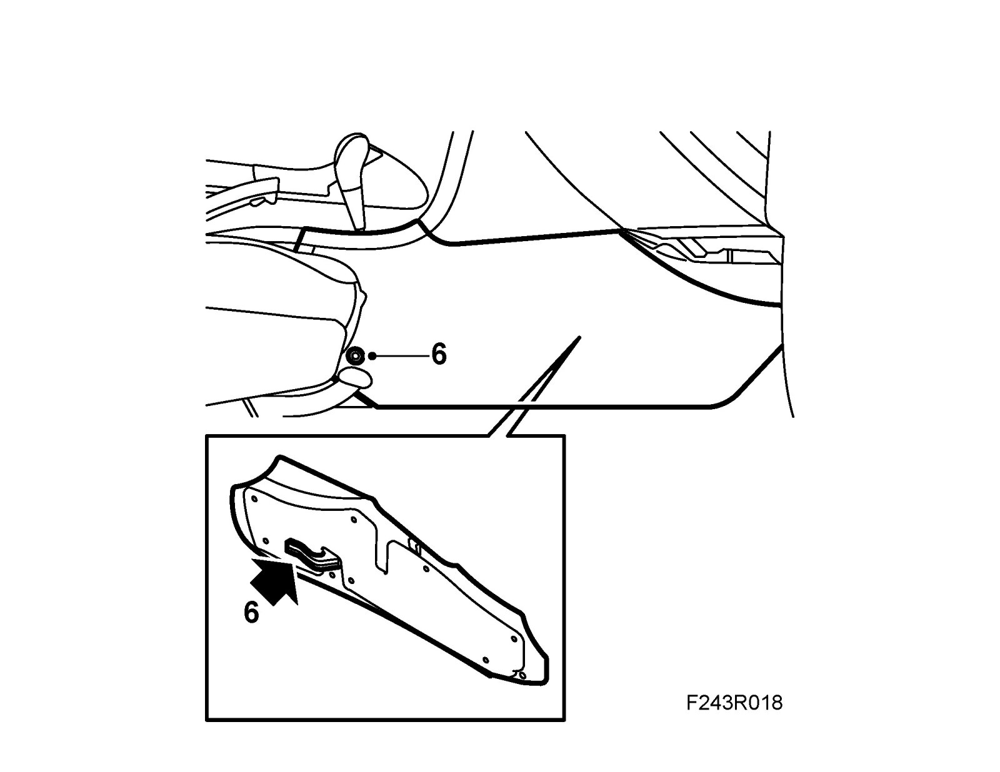

Gear Selector Control Module (726)
Gear selector control module (726)To remove
Before removal, see Before changing a control module.
1. Remove the right side cover on the center console (1 screw).
2. Remove the front stay.

3. Remove the front part of the air duct.
Important
Take care when releasing the locking mechanism on the connector so as not to damage the connector. Pull the halves straight apart to avoid bending the pins. For further information regarding connectors, refer to Connectors, handling and inspection.
4. Unplug the control module connector and the upper ribbon cable and disconnect the solenoid cable.
5. Release the catch with a screwdriver and remove the control module by pulling it forward.
To fit
1. Fit the control module.

Important
Take care when plugging in the connector so as not to damage or press out the pins/sleeves in the connector. For further information regarding connectors, refer to Connectors, handling and inspection.
2. Plug in the control module connector, making sure the gear segment on the side of the connector is engaged. Connect the solenoid cable and the ribbon cable.
3. Check the operation.
4. Fit the front part of the air duct.
5. Fit the front stay.
6. Fit the right side cover on the center console.

Perform After changing a control module.